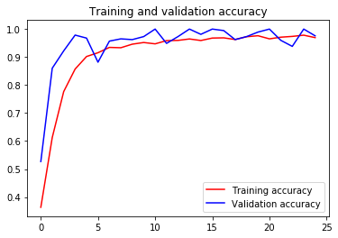
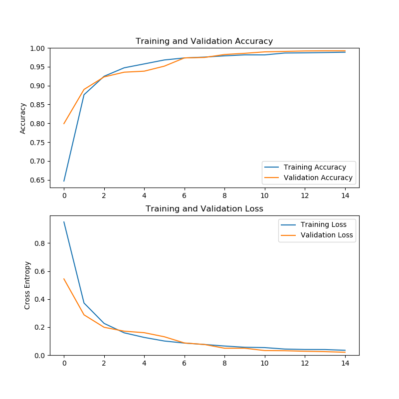

Image classifier
In this post we will see the different Transfer Learning variants applied to the MobileNet model for the Rock Paper Scissors Lizard Spock project.

When I was studying "Deep Learning, a 5-course specialization by deeplearning.ai on Coursera."
I had the idea of practicing
the knowledge acquired by performing a simple game, rock paper
scissors lizard spock. So I started by getting a DataSet that
meets my needs. Since I didn't find any, I decided to create it
(Link to the post where I explain how to create an image dataset with OpenCV.).
In this article, I will explore the possibilities to select the model for my project..
First approach:
 The first step was to look for an example to have a starting point. What I found was a Colab notebook. (Link to the Rock Paper Scissors Colab notebook) The result on the proposed DataSet is excellent (image on the left).
The big problem is that the DataSet used is not similar to what we need. The DataSet consists of hands modeled in 3D with good quality, different skin colors, size, but all on a white background, only gestures from the angle of the back of the hand, and I still needed the Lizard and Spock classes.
So I replaced the DataSet with mine, change the last layer of the model to get 5 classes instead of 3 and as you can see the result was not as expected, but it was the first iteration (plot on the left). Cute Overfitting, this opens up new possibilities, add regulation to the model, find another simpler model or add more data.
Second approach:
I continued searching and researching. I love Tensorflow tutorials, I found this tutorial, "Transfer Learning Using Pretrained ConvNets". And just as many other tutorials use MobileNet, so I decided to give it a try. MobileNet weighs only 14MB and has 3,538,984 parameters, and an impressive top-5 accuracy in ImageNet of 0.92 an extraordinary result versus Xception with a weight of 88MB, 22,910,480 and a top-5 accuracy in ImageNet of 0.94. I had to give MobileNet a chance and play for a while. Here you can see more models in keras
I took this tutorial as a starting point for this second approach, "Load images with tf.data". As in the tutorial I made Feature Extraction with MobileNet, I made the necessary modifications to be able to feed the model with my DataSet, even select the smallest version of the model, with the smallest input image size. Under these conditions the model weighs only 4MB. It has so much power that my DataSet did Overfitting from the first epoch. Now if it was very clear, I needed more images.
Third approach. MORE DATA.
After expanding my DataSet, my old DataSet consisted of 5,000 images, my new DataSet continent 25,000. I decided to do three tests, train my model in the last two layers with feature extraction, train my model with fine-tuning, train the entire model.
For this third approach, I made some changes to the DataSet, first, I resized all the images to 96x96 to decrease the weight of the DataSet in memory and accelerate the loading process, second, I used this package to split the DataSet into Train, Test and Validate. Third, change the data input method, for this I used flow_from_directory() in conjunction with ImageDataGenerator() to be able to perform Data Augmentation. The Sketch with the mentioned changes performs feature exraction, the last two layers of the model are customized for our 5 classes. The result (image on the left) is not the best, but there are still two more tests.
In the image on the right we see the result of Fine Tuning, for this result, we leave the first 100 layers with their pre-trained values with ImageNet and re-train the following l ayers, to take into account, the model has 155 layers.
 Finally, train all layers. Here I must make a clarification, this result was obtained by re-training the entire model, but based on the ImageNet values. I also did the test based on random values, but I only achieved 0.43 in train accuracy. So one of the things to try is to take the first first approach, and using my new DataSet in conjunction with the model already trained with the original DataSet (rock paper scissors) perform a Feature extraction, Fine Tuning and All Layers train.